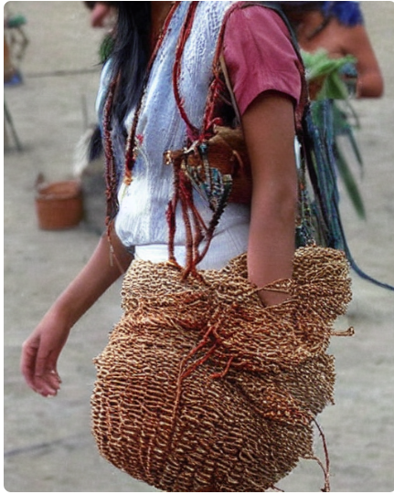
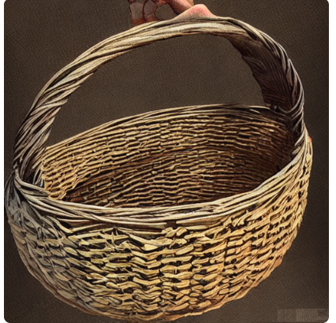

Unleash Your Creativity: The Secret Art of Basket Weaving Revealed!

Are you tired of conventional hobbies that don't quite scratch that creative itch? Enter basket weaving, the ancient craft that's experiencing a modern revival! Forget what you think you know about weaving - this isn't just about making utilitarian containers. Basket weaving is an art form that allows you to express yourself in ways you never imagined. From intricate patterns to bold color combinations, the possibilities are endless. Plus, it's a meditative practice that can help reduce stress and increase mindfulness. So why wait? Grab some reeds and start weaving your masterpiece today!
Penelope Craftsman
Basket Weaving 101: Everything You Need to Know to Get Started!

Ever wanted to try your hand at basket weaving but didn't know where to begin? Look no further! In this beginner's guide, we'll walk you through the basics of basket weaving so you can start crafting beautiful baskets in no time. , gather your materials - reeds, cane, or even newspaper will do. Then, learn the essential techniques like coiling, twining, and plaiting. Don't worry if it seems daunting at first - practice makes perfect! Before you know it, you'll be weaving baskets like a pro. So roll up your sleeves and let's get weaving!
Alex Weaver
From Hobby to Hustle: How Basket Weaving Became a Profitable Side Gig!

What if we told you that your favorite pastime could also pad your pockets? That's right - basket weaving isn't just a hobby anymore, it's a booming side hustle! With the rise of online marketplaces and artisanal appreciation, there's never been a better time to turn your passion for weaving into a profitable venture. Start by creating a portfolio of your work and building an online presence through social media and platforms like Etsy. Don't underestimate the demand for handmade, one-of-a-kind baskets - they make perfect gifts and home decor items. So why not turn your weaving skills into cold, hard cash?
Maya Crafts